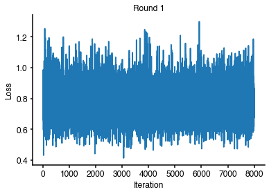
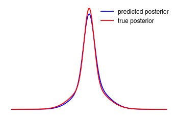

Getting started¶
In this tutorial, we will do parameter inference on a simple statistical model. In total, this tutorial has an expected run time of 5 minutes.
First off, let’s see whether delfi is installed properly:
import delfi print(delfi.__version__)
0.8.0
No error was raised, and we can continue.
Simulator¶
For the purpose of this example, we will consider a very simple statistical model, with a single parameter \(\theta\). Depending on \(\theta\), data is generated according to: \(x|\mathbf{\theta} \sim 0.5 \mathcal{N}(x|\mu=\theta, \sigma^2=1) + 0.5 \mathcal{N}(x|\mu=\theta, \sigma^2=0.1)\)
This model is implemented in delfi.simulator, we will import the model and create an instance:
from delfi.simulator import GaussMixture n_params = 1 m = GaussMixture(dim=n_params)
Prior¶
Next, we will define a prior distribution over \(\theta\) as \(\mathcal{U}(-10, 10)\):
import delfi.distribution as dd import numpy as np p = dd.Uniform(lower=[-10], upper=[10])
Summary statistics¶
We will not reduce the dimensionality of our data, and instead just apply the identity:
from delfi.summarystats import Identity s = Identity()
Generator¶
Having defined the simulator, prior, and summary statistics, we instantiate a generator object:
from delfi.generator import Default g = Default(model=m, prior=p, summary=s)
Having specified the generator, we can draw parameters and data using the gen() method:
params, stats = g.gen(500)
import matplotlib.pyplot as plt %matplotlib inline
plt.plot(stats, params, '.') plt.ylabel(r'$\theta$') plt.xlabel(r'x');

Inference¶
Say, we observed data \(x_\text{o}\) and are interested in the posterior distribution \(p(\theta|x=x_\text{o})\). The likelihood-free inference (LFI) algorithms implemented in delfi allow doing so, without using the likelihood function: In most real world application, the likelihood function is not available. We aim to do inference by just generating examples, i.e., simulating the model.
We choose the toy model such that the posterior is easily tractable analytically. This will allow us to judge the result against the ground truth. We will carry out inference for \(x_0 = 0\).
x0 = np.array([[0.]])
Basic density estimation based LFI¶
A simple algorithm to use density estimation for LFI looks as follows:
\(q_\phi\) will be a mixture density network (MDN): The MDN is a neural network that maps from \(x\) to a Gaussian mixture distribution.
For our example, we will set \(K=2\), such that the resulting mixtures will have two components.
To apply the above algorithm to the toy problem, create an instance of the inference algorithm specifying details:
%%capture from delfi.inference import Basic inf_basic = Basic(obs = x0, generator=g, n_components=2, n_hiddens=[10])
We specified that we want K=2 components, and the neural network got a single hidden layer with 10 units. Additional entries in the list passed for n_hiddens would create additional layers.
log, train_data, _ = inf_basic.run(n_train=4000)
We drew N=n_train training examples and ran the algorithm. We can plot the loss function, across training rounds of the neural network:
plt.figure() for i in range(len(log)): plt.subplot(1, len(log), i + 1) plt.plot(log[i]['loss']) plt.xlabel('Iteration') plt.ylabel('Loss') plt.title('Round {0}'.format(i + 1))

Say we observed \(x_o = 0.\) and want to predict the posterior \(\hat{p}(\theta | x=x_{\text{o}})\):
posterior = inf_basic.predict(x0)
The parameters of the predicted posterior are:
for k in range(2): print(r'component {}: mixture weight = {:.2f}; mean = {:.2f}; variance = {:.2f}'.format( k+1, posterior.a[k], posterior.xs[k].m[0], posterior.xs[k].S[0][0]))
component 1: mixture weight = 0.45; mean = -0.00; variance = 0.08 component 2: mixture weight = 0.55; mean = -0.05; variance = 0.35
The correct posterior for this problem is known – since the prior is uniform it is simply:
true_posterior = dd.MoG(a=[0.5, 0.5], ms=[[0.], [0.]], Ss=[[[1.0]], [[0.1]]]) plt.plot(posterior.eval(np.arange(-5.0, 5.0, 0.01).reshape(-1,1), log=False), '-b') plt.plot(true_posterior.eval(np.arange(-5.0, 5.0, 0.01).reshape(-1,1), log=False), '-r') plt.legend(['predicted posterior', 'true posterior'], frameon=False) plt.axis('off');

Sequential Neural Posterior Estimation¶
For the problem we picked here, the basic inference algorithm does a good job. More complicated problems, however, may require more sophisticated algorithms.
Instead of sampling all parameters from the prior, we can use our simulator more efficiently by drawin only a first sent of parameters from the prior and then switch to using a different distribution to sample from (a proposal distribution). Intuitively, the proposal distribution is chosen such that, when simulated, data is closer to \(x_o\). In order to get the correct posterior, we will need to account for the fact that we drew these samples from a different distribution. There are three inference methods impelemented in delfi, each with a different approaches to this problem. APT or SNPE-C is the latest version of the SNPE algorithm and performs best on most problems.
Automatic posterior transformation¶
Automatic posterior transformation (APT, sometimes referred to as SNPE-C) improves on SNPE-A and SNPE-B by adjusting for the difference between the proposal and prior during learing. This means that APT doesn’t rely on post-hoc corrections or importance weights, which leads to more accurate inference than the previous two methods.
This technique is described in “Automatic Posterior Transformation for Likelihood-Free Inference,” by Greenberg, Nonnenmacher and Macke, ICML 2019.
from delfi.inference import APT inf_APT = APT(generator=g, n_components=2, n_hiddens=[10], obs=x0) logs, tds, posteriors = inf_APT.run(n_train=[3000, 1000], n_rounds=2, train_on_all=True) posterior = posteriors[-1]
for k in range(2): print(r'component {}: mixture weight = {:.2f}; mean = {:.2f}; variance = {:.2f}'.format( k+1, posterior.a[k], posterior.xs[k].m[0], posterior.xs[k].S[0][0])) true_posterior = dd.MoG(a=[0.5, 0.5], ms=[[0.], [0.]], Ss=[[[1.0]], [[0.1]]]) plt.plot(posterior.eval(np.arange(-5.0, 5.0, 0.01).reshape(-1,1), log=False), '-b') plt.plot(true_posterior.eval(np.arange(-5.0, 5.0, 0.01).reshape(-1,1), log=False), '-r') plt.legend(['predicted posterior', 'true posterior'], frameon=False) plt.axis('off');
component 1: mixture weight = 0.49; mean = 0.11; variance = 0.94 component 2: mixture weight = 0.51; mean = -0.00; variance = 0.12

Adapting to other problems¶
In order to use delfi with a specific problem, you’d need to implement a simulator class and possibly summary statistics.
Simulators should inherit from a simulator base class. The base class for simulators specifies that each child needs to inherit a method called gen_single() – the function that forward simulates a single \(\theta\) to data. It should return a dictionary that contains the result under a key called data. This is also detailled in the docstring of the base class. For an actual implementation, you can see the code for the mixture model we used above: https://github.com/mackelab/delfi/blob/master/delfi/simulator/GaussMixture.py.
For this example, we used the identity as a summary statistics. If you were to use summary statistics, consider the implementation of mean summary statistics for a basic example: https://github.com/mackelab/delfi/blob/master/delfi/summarystats/Mean.py, and again, there is a base class specifying the interface.